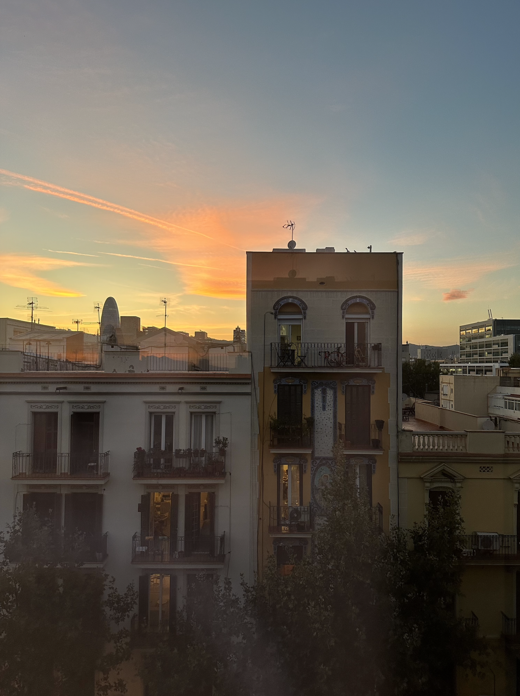
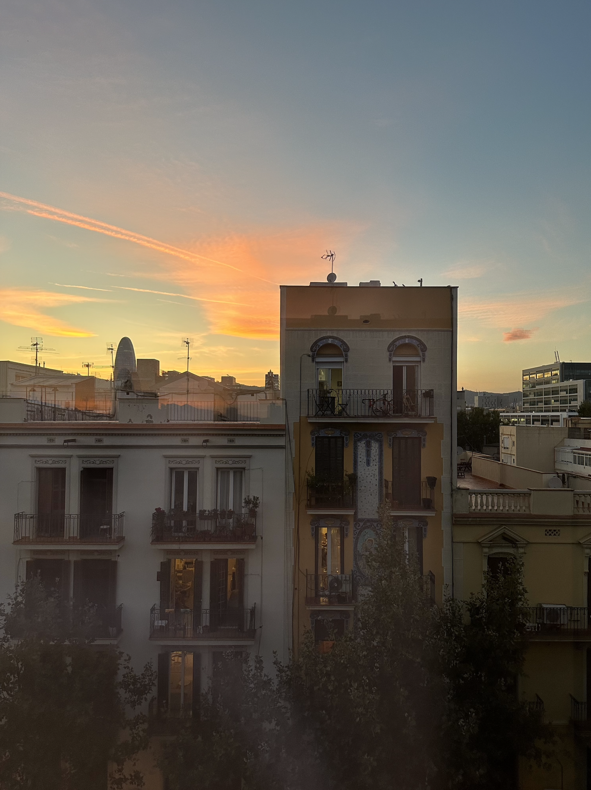

Hoe duur is uit eten in Barcelona?
In Spanje is het relatief goedkoop, voor een uitgebreid ontbijt of een lunch zal je gemiddeld zo'n €10 tot €15 per persoon kwijt zijn.
s'Avonds kun je gemakkelijk uit eten voor zo'n €20 per persoon, dit is de prijs voor een driegangenmenu. Restaurants in toeristische gebieden hebben vaak hogere prijzen, dus loop iets verder als je geld wilt besparen.
Proef de Catalaanse Keuken
Waarschijnlijk ontkom je er niet aan, maar probeer lokale gerechten zoals paella, tapas of crema catalana!
Hoe zit het met de veiligheid in Barcelona, en welke voorzorgsmaatregelen moet ik nemen?
Met name in Barcelona zijn veel zakkenrollers actief. Ook berovingen met geweld komen voor. Wees alert op drukke plekken, zoals de metro, terrassen, winkelstraten of het strand. Mogelijk probeert iemand u af te leiden, terwijl een ander uw spullen pakt.
Tip: Ik droeg ik een fannypack waar ik mijn waardevolle spullen in meenam, dit is veiliger omdat je het dicht bij je lichaam kunt dragen.
Probeer zoveel mogelijk drukke plekken te vermijden en alert te zijn wanneer iemand je onverwachts aanspreekt.

 

Wat is het beste seizoen om Barcelona te bezoeken?
Dat hangt natuurlijk af van je persoonlijke voorkeuren en de activiteiten die je gaat doen.
Barcelona heeft lange zomers en milde winters. In de zomer kunnen vooral de nachten erg warm zijn, met temperaturen van 20° C en ver daarboven. Meestal beginnen in maart de eerste dagen met temperaturen boven de 20 graden, terwijl die temperaturen kunnen voortduren tot het einde van november.
De warmste maanden zijn juli en augustus, wanneer het regelmatig warmer is dan 30 graden.
Hoe is het openbaar vervoer in Barcelona geregeld?
In Barcelona kun je met één ticket gebruik maken van het hele ov-netwerk (bus,tram,trein en metro).
Veel plezier in Barcelona, ik hoop dat deze tips van pas komen!